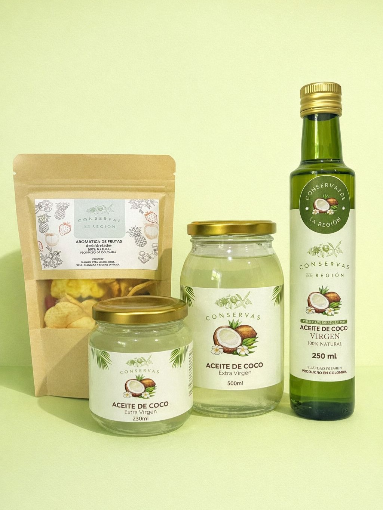
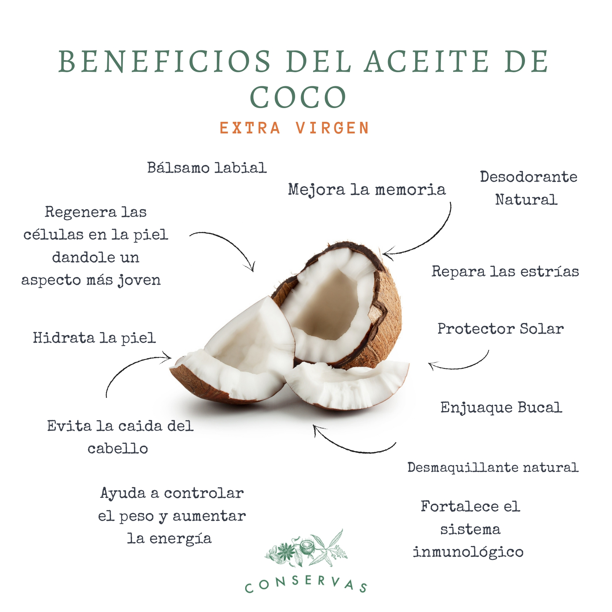

Coco, plátano y maracuyá transformados en experiencias botánicas y gastronómicas de origen natural.
Somos una empresa de San Juan de Urabá, en el Caribe colombiano, dedicada a la producción y comercialización de coco, plátano tipo exportación y maracuyá. Nos especializamos en la elaboración de aceite de coco y coco deshidratado, productos de calidad superior con altos niveles nutricionales para el bienestar integral. Somos orgullo 100% colombiano. Nuestro compromiso va más allá del producto: apoyamos a mujeres cabeza de hogar y protegemos nuestro entorno utilizando empaques biodegradables y reciclables (vidrio, cartón y fibra de coco).
Conoce nuestra historia →
Un legado agrícola que se transmite de generación en generación, cultivando las tierras más prósperas de nuestra región.

Nuestro aceite de coco es extraído garantizando su pureza absoluta para mantener intactas todas sus propiedades y nutrientes esenciales.
Nuestros aceites no contienen aditivos, saborizantes ni fragancias. Extraemos la esencia real garantizando su pureza y manteniendo todos sus nutrientes.
Detrás de cada fruto hay personas y comunidades. Apoyamos directamente a mujeres cabeza de hogar, creando un ecosistema de crecimiento mutuo.
Un espacio dedicado al coco y el plátano que respeta el medio ambiente, utilizando prácticas ecológicas y empaques 100% biodegradables y reciclables.
Un proceso delicado y artesanal. Descubre la textura, el aroma y la verdadera esencia de la naturaleza en nuestro Aceite de Coco Virgen. Mantenemos el respeto por nuestra tierra en cada frasco.


Es un municipio costero al norte de Antioquia, Colombia. Se caracteriza por su ubicación estratégica de estar frente al mar caribe, una ventaja natural que ha definido su historia y su cultura desde sus inicios. Por su ubicación costera es visto como tierra de oportunidades, destacando su cercanía al mar y su clima cálido constante lo que le permite ser una de las tierras más prosperas de la región.